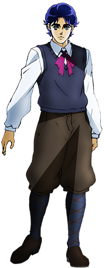
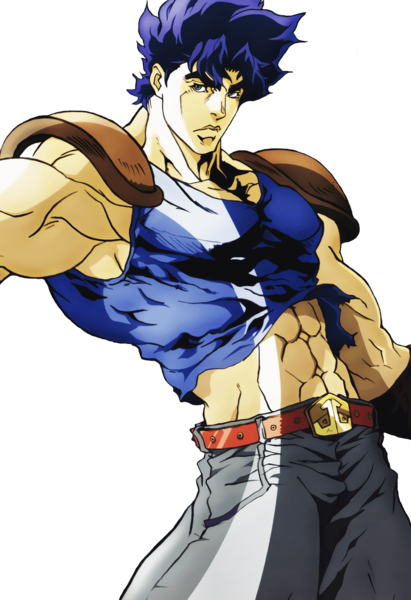
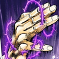

“ Eu quero ser um verdadeiro cavalheiro! Há momentos em que cavalheiros devem ter coragem para lutar, mesmo que seja contra pessoas mais fortes e que saibam que vão perder! ”
Jonathan Joestar (ジョナサン・ジョースター Jonasan Jōsutā) é o protagonista da primeira parte de JoJo's Bizarre Adventure, Phantom Blood, e o primeiro JoJo da série. Seu legado se estende por quase todas as seis primeiras partes da série, com personagens importantes como Joseph Joestar e Jotaro Kujo sendo seus descendentes.
Jonathan é filho dos milionários George Joestar I e Mary Joestar. É um homem honesto, adorável e positivo, cuja vida é transformada em tragédia após conhecer seu irmão adotivo - e antagonista da série - Dio Brando. Em seu duelo contra Dio, Jonathan se torna um usuário de Hamon pela tutela de seu mestre, Will Anthonio Zeppeli. Jonathan é o pai biológico de Giorno Giovanna, o protagonista de Vento Aureo, e também de um punhado de outros filhos ilegítimos.
 Adepto às normas da Era vitoriana, o traje infantil de Jonathan aos seus 12 anos consistia em uma camisa de colarinho, calções, um par de meias longas e sapatos sociais. A vestimenta também era acompanhada por um blazer, colete, gravata ou um par de suspensórios. Como parte da nobreza, às vezes substituía sua gravata por um laço de fita, assim como seu pai. Ao boxear, ele veste uma roupa casual de boxe, que consiste numa camiseta sem manga, calções e luvas de boxeador . Durante seu passatempo com Erina, Jonathan também usa uma boina e um par de joelheiras. Ao navegar pelo rio, ele usa um traje de banho listrado de duas peças.
 Já como um adulto de 20 anos, Jonathan é alto (195 cm) e extremamente musculoso, com o toque de um cavalheiro. Seu traje típico reflete seu passado nobre, caracterizado por túnicas estilizadas sobre camisas de manga longa. Os adereços consistem em gravata borboleta, botas grossas e colete. Em casa, a veste semi-formal de Jonathan consiste numa camisa com colarinho, gravata e uma jaqueta de mangas enroladas. Durante as partidas universitárias de Rugby, ele veste uma camisa listrada estandarte e pantalonas com meias longas. Quando vai para a Ogre Street procurar uma cura para a doença de seu pai, Jonathan utiliza vestes completamente novas, que consistem numa jaqueta acolchoada e pantalonas grossas, além de um gorro e de uma longa capa. Durante seu treinamento com Zeppeli, ele usa uma camiseta sem mangas com munhequeiras, e a certo momento, um diadema.
Durante sua infância, Jonathan foi orgulhoso e travesso, porém gentil. Apesar de querer ser um "verdadeiro cavalheiro",Jonathan carecia de modos e maneiras e majoritariamente se comportava como uma criança normal. Sua mãe, que morreu antes que pudesse lembrá-la, e seus colegas, que o excluíam pelo seu status, deixaram Jonathan um pouco solitário. Enquanto Jonathan não possuía sua força de vontade, Dio, sem saber, se tornou o catalisador de seu crescimento, empurrando-lhe ao limite ao humilhar sua namorada, Erina Pendleton. Entretanto, ele já possuía a sua bondade e coragem ao imediatamente resgatar Erina de um embate contra dois valetões, mesmo não a conhecendo na época. Em primeiro lugar, Jonathan aspira para ser um "verdadeiro cavalheiro". Leva o nome dos Joestars com orgulho, nunca quebrando o código de conduta que estabeleceu para si mesmo e trata qualquer companheiro humano com respeito até que se provem maus.
atletismo: Jonathan é forte o suficiente para conseguir carregar dois homens com ele Jonathan havia vivido um passado difícil como filho de um aristocrata e em sua infância sabia-se que era ao menos um boxeador competente. Em sua vida universitária, jogou Rugby ao lado de Dio Brando e foi classificado como uma das duas estrelas da Academia Hugh Hudson.
Inteligência: Jonathan é mostrado como uma pessoa inteligente e um pensador muito competente durante as batalhas, constantemente aparecendo com novas estratégias em meio ao combate para derrotar inimigos como Bruford e Dio. Academicamente, Jonathan se graduou na universidade após escrever uma tese muito celebrada na arqueologia. Ele estudou meticulosamente a Máscara de Pedra, indo longe a ponto de identificar os pontos no cérebro que seriam furados por ela, mas não descobriu seu verdadeiro propósito por si mesmo.
Hamon: Jonathan possui um arsenal de antigas técnicas de artes marciais, a maioria herdada por Will A. Zeppeli e envolvendo o Hamon, à sua disposição. Algumas são de sua criação, a maioria terminando com "Overdrive".
Quando DIO despertou o The World, o corpo de Jonathan também despertou um Stand semelhante ao poder do Hermit Purple com habilidades semi-precognitivas. Semelhante ao Hermit Purple, ele pode produzir fotografias psíquicas ao golpear uma câmera ou bola de cristal, a qual DIO usa para rastrear a localização dos Joestars e seus amigos para enviar Usuários de Stand atrás deles. DIO era até mesmo capaz de dizer quando Joseph usou o Hermit Purple para tirar fotografias psíquicas dele, e instantaneamente saber que sua aquisição de um Stand também despertou habilidades de Stand nos descendentes de Jonathan.
| Imagem | Estreia | Tipo | Habilidade |
|---|---|---|---|
|  | Capítulo 122 / Sc Episódio 3 | Curto-Alcance | Fotografia Espiritual |
George Joestar I: Em sua juventude, o pai de Jonathan foi muito rigoroso com ele, corrigindo sua falta de maneiras à mesa e repreendendo seus estudos, enquanto ignorava o mau que Dio estava trazendo para seu próprio filho. Isto talvez foi pior pelo fato de que a mãe de Jonathan havia morrido alguns anos antes, endurecendo George e transformando-o em alguém mais severo para seu filho. Independentemente, Jonathan ainda ama seu pai de forma grandiosa, furiosamente brigando com Dio, que havia sido seu amigo nos 7 anos anteriores, por envenenar seu pai. Quando Dio lança uma faca contra Jonathan, George se sacrifica para bloquear o ataque e comenta que "Não se sente tão mal por morrer nos braços de seu filho".
Mary Joestar: Embora as interações de Jonathan com sua mãe nunca tenham sido mostradas, já que a mesma foi morta enquanto ele ainda era um bebê, ele demonstra que a ama demais, observando sua foto melancolicamente e chorando depois que Dio arruinou sua vida com sua chegada.
Erina Pendleton: O interesse romântico de Jonathan, e eventualmente sua esposa, primeiramente se apresenta com um lenço logo após ele ter apanhado de valentões. Jonathan logo confessa seu amor por ela, o qual ela aparenta aceitar apenas uma parte, até que Dio aparece e lhe assedia com um beijo com o objetivo de chatear os dois. Entretanto, Erina retorna logo após a mansão Joestar queimar, e cuida de Jonathan até que recupere sua saúde, acendendo mais uma vez a chama do romance entre os dois. Ambos se casam logo após Jonathan derrotar Dio com seu Hamon e o relacionamento continua bem até o envelhecimento de Erina.
Giorno Giovanna: Muitos anos após a morte de Jonathan, DIO usa o corpo do Joestar para se deslumbrar pelo mundo, aonde gera 4 filhos, sendo um deles Giorno. De todas as crianças, Giorno é o primogênito e carrega a marca de nascença graças ao DNA de Jonathan presente em seu corpo. Ainda que Giorno apresente um lado mais sinistro, relembrando a falta de piedade de DIO (mesmo que dirigido a pessoas malignas), ele retém o nobre coração e desejo de ajudar inocentes, semelhante aos ideais de Jonathan.
Joseph Joestar: Joseph é o neto de Jonathan. Joseph não detinha conhecimento de quem era seu avô até sua batalha com Straizo, pois Speedwagon manteve em segredo os eventos das batalhas de Jonathan. Entretanto, Joseph sempre manteve um enorme respeito por ele devido ao seu relacionamento com Erina e sua amizade com Speedwagon. Quando Caesar insulta Jonathan, enfurece Joseph por trazer à tona seu passado. Seu respeito pelo seu avô é ainda mais aparente anos depois, já que se mostra irritado por DIO estar usando o corpo de Jonathan para seus propósitos.